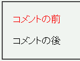

HTML文書で用いている文字コードと外部スタイルシートで用いている文字コードが異なっているとき、外部スタイルシート内で特定の文字をコメントにすると、それより後の部分のスタイル宣言が無視される。
外部スタイルシート「b121.css」：
p.sa1 {
color: red;
}
/* 定 */
p.sa2 {
color: blue;
}
この文書「b121.html」：
<meta http-equiv="content-type" content="text/html; charset=UTF-8"> <link rel="stylesheet" type="text/css" href="b121.css"> <p class="sa1">コメントの前</p> <p class="sa2">コメントの後</p>
コメントの前
コメントの後
バグを発生させるコメントのひとつである /* 定 */ を使用しています。この例示では2つ目のp要素の前景色が青色になるはずです。
N7.1での表示（標準モード）
WinIE6.0での表示（標準モード）
例示のバグはWinIEが、Shift_JISコードで記述された外部スタイルシートをUTF-8で記述されたものと誤認していることが原因と考えられます。これによりコメントの終わりを示す */ が化けてしまうとスタイルシートの終端までをコメントと認識されてしまいます。
UTF-8の場合、コメント文字列の終端に、Shift_JISコードの16進表記で下から2桁目が「E」や「F」になる文字が置かれたときにこの現象が発生しやすいようです。例えば「も（0x82E0）」、「状（0x8FF3）」、「定（0x92E8）」など多くの文字が該当します。
文字コードの誤認がバグの原因なので、外部スタイルシートで@charset宣言を用いて正しい文字コードを明示すればこのバグを回避できます。
WinIE5.5、WinIE6.0でこの現象の発生を確認しました。